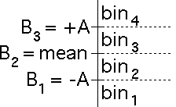
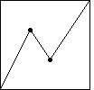
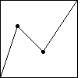
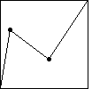

| Here we use mean-centered
bins, symmetrically spaced,
to drive the IFS with data generated by several cartoons. |
| For later comparison with some financial data sets, we take
cartoons with 3128 data points. |
| The goal of these examples is to investigate different methods of comparing cartoons
and real data, with the hope of finding a reliable way to best match a cartoon and a
data set. |
| Driving an IFS with sampled cartoon values (the equivalent of closing
prices for financial data) usually produces IFS points lying on a backward Z,
so instead we drive the IFS with successive differences. |
| In zero-centered driven IFS we took
B2, the boundary between bin2 and bin3, to be 0,
and placed B1 and B3 symmetrically about B2, expressing
A, the distance from B1 and B3 to B2, as a fraction of the
range of the differences. |
| Here we place B2 at the mean (or average) of the differences, and express A
as a multiple (sometimes greater than 1, sometimes less than 1) of the
standard deviation
of the differences. |
|  |
| Here are some examples. We show the time series of successive differences and the
driven IFS. |
|  |
Here
we use the cartoon with generator having turning points
(1/3,2/3) and (5/9,1/3). |
|  |
Here
we use the cartoon with generator having turning points
(2/9,2/3) and (5/9,1/3). |
|  |
Here
we use the cartoon with generator having turning points
(2/9,2/3) and (5/9,1/3). |
|